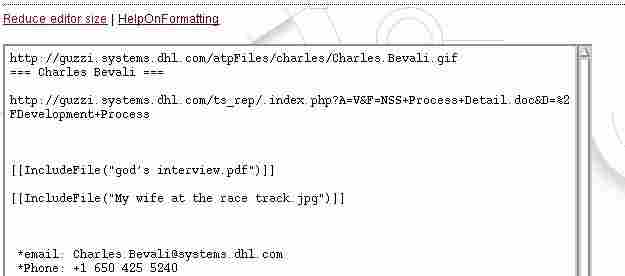
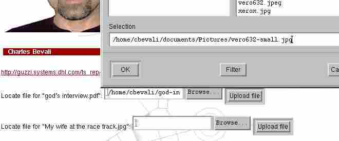

To use it, just insert the "IncludeFile" macro in the body of your WikiWiki document, with a name for the document to be uploaded. The only constraint is to respect the extension of the document.
| Example | ||
| Type of document | extension | |
| word document | .doc | |
| picture | .gif or .jpg | |
| excel spreadsheet | .xls | |
| etc. | ||
the syntax is
[[IncludeFile("Your Document Name.jpg")]]
example:
| Example |
|  |
When the page is saved, WikiWiki evaluates the Macro, and if the file(s) that match(es) the name given as a parameter to the macro has not been already uploaded, then WikiWiki will ask you to upload the file(s).
| Example |
You can use the browse button to locate the file to be loaded:
| Example |
|  |
 You should respect
the extension of the file name that has been provided as a paramter to
the Macro.
You should respect
the extension of the file name that has been provided as a paramter to
the Macro.
If the file is a picture (gif, jpg, jpeg, png) then the picture will be inserted in line in the page.
Otherwise, a link to the file will be created.
The result of the Demo will be:
| Example |
Because IncludeFile does not add any formatting, it is possible to include elements in the flow of the text.
| Example |
| I wanted to share [[IncludeFile("god interview.pdf")]] with all the readers [[IncludeFile("devilish smiley.gif")]] because it is fun |
| I wanted to share god interview.pdf with all the readers because it is fun |
All WikiWiki files are stored in ATP Web Based File System
Enjoy!